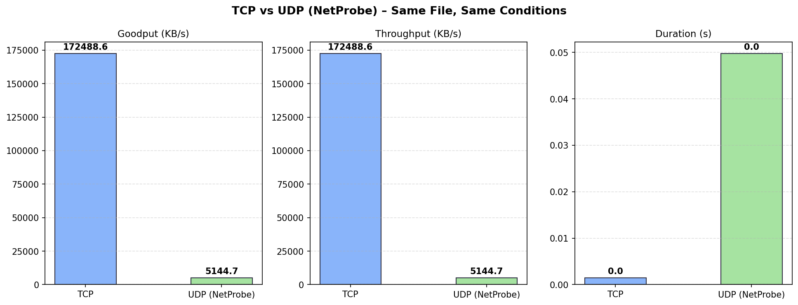

NetProbe
UDP tabanlı güvenilir dosya aktarımı ve ağ performansı analiz platformu
Genel bakış
NetProbe, doğrudan UDP soketleri üzerine kurulmuş, tamamen güvenilir bir dosya aktarım protokolü. TCP ya da hazır kütüphane kullanılmıyor. Tüm güvenilirlik mekanizmaları (sıra numaraları, ACK'ler, zaman aşımları, yeniden gönderim, kopya paket tespiti ve MD5 bütünlük kontrolü) tamamen uygulama katmanında yazıldı.
Ayrı bir kayıt ve analiz modülü her ağ olayını kaydediyor ve performans grafikleri üretiyor. Projede gerçek zamanlı izleme için bir Flask web dashboard'u ve birkaç ek özellik var: şifreleme, sıkıştırma, PCAP dışa aktarımı, çoklu istemci desteği ve TCP ile UDP karşılaştırması.
Özel protokol tasarımı
Protokolün durum makinesi dört paket türünden oluşuyor:
Her paketteki CRC32 sağlama toplamı, aktarım sırasında oluşan bozulmaları yakalıyor. FIN paketi tüm dosyanın MD5 özetini taşıyor; sunucu bütünlüğü doğruladıktan sonra başarılı/başarısız durumunu içeren bir FIN_ACK gönderiyor. Ayarlanabilir yeniden gönderimli stop-and-wait ARQ sayesinde hiçbir paket fark edilmeden kaybolmuyor.
Özellikler
UDP üzerinden güvenilir aktarım
Sıra numaraları, ACK'ler, ayarlanabilir zaman aşımları ve en fazla 5 yeniden denemeyle stop-and-wait ARQ. Kopya paket tespiti, verinin iki kez yazılmasını önlüyor.
Dosya bütünlüğü
Paket başına CRC32 sağlama toplamı ve uçtan uca MD5 özet doğrulaması. Özet eşleşmezse sunucu dosyayı reddediyor.
Şifreleme ve sıkıştırma
Gönderimden önce XOR tabanlı şifreleme ve zlib sıkıştırması uygulanıyor. Her aktarım için CLI parametreleriyle ayarlanabiliyor.
Çoklu istemcili sunucu
Birden fazla istemciden gelen eş zamanlı aktarımlar thread'lerle yönetiliyor. Her istemcinin ayrı bir alım tamponu ve kayıt dosyası var.
PCAP dışa aktarımı
Tüm paketler, çevrimdışı inceleme ve hata ayıklama için Wireshark ile açılabilen bir .pcap dosyasına yazılıyor.
Web dashboard'u
Aktarım ilerlemesini gerçek zamanlı göstermek için Server-Sent Events kullanan bir Flask uygulaması. Dosya yükleme, sunucuyu başlatma/durdurma ve grafikleri görüntüleme tarayıcıdan yapılabiliyor.
TCP ve UDP karşılaştırması
Ayrı bir karşılaştırma modülü aynı dosya aktarımlarını hem TCP hem de özel UDP protokolüyle çalıştırıyor; 32 KB ile 5 MB arasındaki dosya boyutlarında aktarım hızını, aktarım süresini ve yeniden gönderim yükünü ölçüyor.

| Dosya boyutu | UDP aktarım süresi | TCP aktarım süresi | Gözlem |
|---|---|---|---|
| 32 KB | ~0.02s | ~0.01s | Çok küçük dosyalarda TCP daha hızlı |
| 256 KB | ~0.08s | ~0.09s | Benzer |
| 1 MB | ~0.30s | ~0.32s | UDP yakın sonuç veriyor |
| 5 MB | ~1.4s | ~1.5s | Tıkanıklık olmadığında UDP daha hızlı |
Deney senaryoları
| Senaryo | Açıklama | Değişken |
|---|---|---|
| 1 | Farklı dosya boyutları (kayıpsız) | 32 KB → 5 MB |
| 2 | Farklı paket kaybı oranları | 0% → 20% simüle edilmiş kayıp |
| 3 | Farklı parça boyutları | 256 B → 4096 B |
| 4 | Çoklu istemci yük testi | 1 → 4 eş zamanlı istemci |
| Ek | Kayan pencere ile aktarım hızı | Pencere boyutu 1 → 8 |